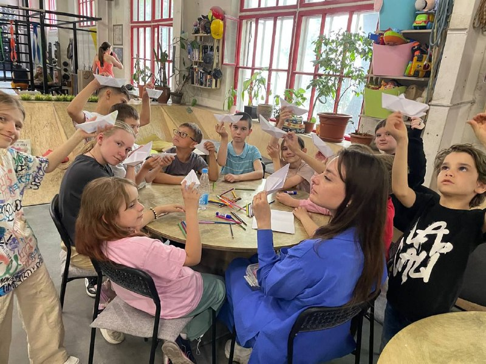
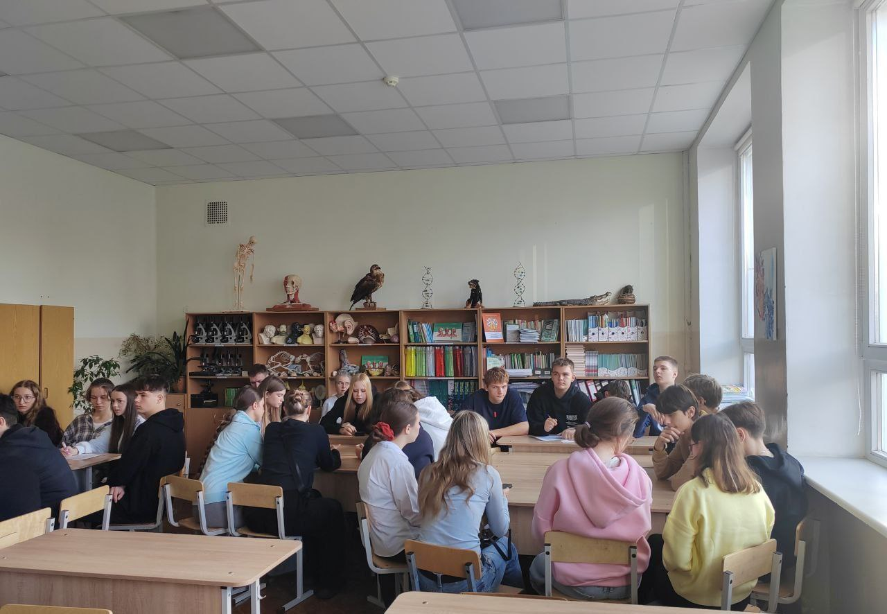

Практика: моменты взаимодействия

Взаимодействие с младшей группой

Работа с подростками: групповая дискуссия

Психологическое просвещение

Интерактивное занятие
Профессиональные инсайты и выводы
Практика позволила мне увидеть существенный разрыв между идеально выстроенной теорией и живой, непредсказуемой реальностью школьного класса. Я осознала, насколько важно не придерживаться плана занятия слепо, а быть готовой к гибким, моментальным изменениям в зависимости от эмоционального состояния группы и индивидуальных реакций учащихся. Это требует не просто знаний методик, но и развития профессиональной интуиции и высокого уровня саморегуляции, что является моей ключевой точкой роста как будущего специалиста.